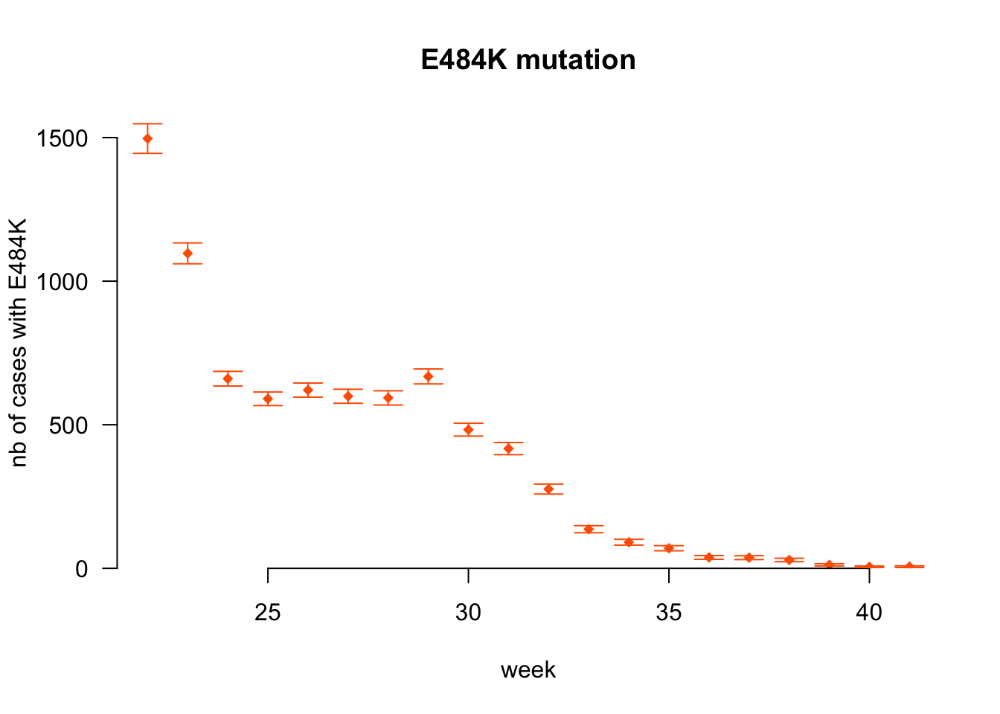

France on GISAID
FD
Document compiled on 2021-10-20.
Initializations
# Colors definitions
library(RColorBrewer)
colsV <- rep(c(brewer.pal(12, "Paired"), brewer.pal(12, "Set3"), brewer.pal(9, "Set1")), 20)
colsP <- brewer.pal(5, "Set1")
names(colsP) <- c("autre", "HCL", "HMN", "IHU", "IPP")
colsC <- c(brewer.pal(9, "Set1"), brewer.pal(6, "Set2"), brewer.pal(12, "Set3"))
colsV2 <- brewer.pal(9, "Set3")
colGISAID <- "#106b63"
colECDC <- "#69b023"
colSPF <- "#e30155"
cols <- c(colGISAID, colECDC, colSPF, "#FE6100", "#785EF0")
names(cols) <- c("GISAID", "TESSy", "Flash", "criblage", "option")
pchs <- c(16, 15, 2, 17, 1)
names(pchs) <- c(names(cols)[1:3], "Flash2", "TESSyGISAID")# Function to identify entries that are NA or empty
is.NAempty <- function(x){
is.na(x) | x == ""
}Load and clean data
Data source: metadata.tsv file, downloaded from GISAID.
Then, in console
grep "hCoV-19/France" metadata.tsvto extract sequences from France (as country) only. The resulting file is stored in the data/ folder.
Note: Oversea territories are referenced as independent on GISAID
Extracted data for Martinique and Guadeloupe as well (grep Martinique and grep Guadeloupe).
Load data
thedate <- "2021-10-18"
# Load France data
dat <- read.csv(paste0("data/", thedate, "_France.tsv"), sep = "\t", stringsAsFactors = FALSE, header = FALSE)
# Load data DROM
dat2 <- read.csv(paste0("data/", thedate, "_Martinique.tsv"), sep = "\t", stringsAsFactors = FALSE, header = FALSE)
dat3 <- read.csv(paste0("data/", thedate, "_Guadeloupe.tsv"), sep = "\t", stringsAsFactors = FALSE, header = FALSE)
# Add column to distinguish metro from DROM
dat$metropole <- TRUE
dat2$metropole <- FALSE
dat3$metropole <- FALSE
# Join the datasets
dat <- rbind(dat, dat2, dat3)
head(dat)
# Add names
# (names are not in the datafiles because "grep" was used to extract data)
names(dat) <- c("Virus.name", "Type", "Accession.ID", "Collection.date", "Location", "Additional.location.information", "Sequence.length", "Host", "Patient.age", "Gender", "Clade", "Pango.lineage", "Pangolin.version", "Variant", "AA.Substitutions", "Submission.date", "Is.reference", "Is.complete", "Is.high.coverage", "Is.low.coverage", "N.Content", "GC.Content", "Metropole")There are 113573 lines in the dataset; 112465 for mainland France, 527 for Martinique and 581 for Guadeloupe.
Clean data
Extract dates: full date, year-month and year
# Reformat dates
# Table of the lengths of the different dates
table(nchar(dat$Collection.date)) # There are incomplete dates
table(nchar(dat$Submission.date))
# Turn dates into date format, and put NA for incomplete dates
getDate <- function(v){
out <- v
# Remove lines with incomplete date information
out[nchar(out) < 10] <- NA
base::as.Date(out)
}
dat$Collection.date.YMD <- getDate(dat$Collection.date)
dat$Submission.date.YMD <- getDate(dat$Submission.date)
# Extract month
getYM <- function(v){
out <- v
# Remove lines with incomplete date information
out[nchar(out) < 7] <- NA
substr(out, 1, 7)
}
dat$Collection.date.YM <- getYM(dat$Collection.date)
dat$Submission.date.YM <- getYM(dat$Submission.date)
# Extract year
getY <- function(v){
out <- v
# Remove lines with incomplete date information
out[nchar(out) < 4] <- NA
substr(out, 1, 4)
}
dat$Collection.date.Y <- getY(dat$Collection.date)
dat$Submission.date.Y <- getY(dat$Submission.date)Dates: get week numbers
(currently only done for 2021)
# Version 1, only for 2021 (hard-coded)
endDay <- max(dat$Submission.date.YMD)
beginDay <- seq(base::as.Date("2021-01-04"), base::as.Date("2021-12-27"), by = 7)
endDay <- seq(base::as.Date("2021-01-10"), base::as.Date("2022-01-02"), by = 7)
weeks <- as.data.frame(cbind(weekBegin = beginDay, weekEnd = endDay, week = 1:52))
# Assign weeks
# Initialize week numbers
dat$Collection.week <- NA
dat$Submission.week <- NA
for(iw in weeks$week){
# Collection week
dat[which(base::as.Date(dat$Collection.date.YMD) >= base::as.Date(weeks[iw, "weekBegin"], origin = "1970-01-01") & base::as.Date(dat$Collection.date.YMD) <= base::as.Date(weeks[iw, "weekEnd"], origin = "1970-01-01")), "Collection.week"] <- iw
# Submission week
dat[which(base::as.Date(dat$Submission.date.YMD) >= base::as.Date(weeks[iw, "weekBegin"], origin = "1970-01-01") & base::as.Date(dat$Submission.date.YMD) <= base::as.Date(weeks[iw, "weekEnd"], origin = "1970-01-01")), "Submission.week"] <- iw
}
#-------------------------------------
# Version 2, using `format`
dat$Collection.date.wk <- format(as.Date(dat$Collection.date.YMD), "%W")
dat$Submission.date.wk <- format(as.Date(dat$Submission.date.YMD), "%W")
dat$Collection.Ywk <- paste0(dat$Collection.date.Y, "-", dat$Collection.date.wk)
dat$Submission.Ywk <- paste0(dat$Submission.date.Y, "-", dat$Submission.date.wk)
sort(unique(dat$Collection.Ywk))
# A sequence with an odd date
dat[dat$Collection.Ywk == "2020-00", ]
# Check weeks in the two versions
plot(dat$Collection.week, dat$Collection.date.wk,
xlab = "week, version 1", ylab = "week, version 2", main = "Consistency check")
abline(a = 0, b = 1)Difference between submission and collection dates
dat$diffSubCol <- as.numeric(dat$Submission.date.YMD - dat$Collection.date.YMD)Locations:
Try to get some uniformity automatically because some spellings differ
# Split locations
# Locations are presented as a single string, which we split
locs <- strsplit(dat$Location, " / ")
# The strings are of different lengths / precision; get length (number of geographic divisions)
lenlocs <- sapply(locs, length)
table(lenlocs)
# Turn into matrix, filling with NAs
# Source: https://stackoverflow.com/a/15201690
mat <- as.data.frame(t(sapply(locs, "[", i = 1:max(lenlocs))))
names(mat) <- c("continent", "country", "region", "div4", "div5")
# Add the dataset
dat <- cbind(dat, mat)
# Also add information about location precision
dat <- cbind(dat, locationLength = lenlocs)
# Load dictionary to convert region names
infoRegion <- read.csv("data_public/correspondance_regions.csv")
# Check that we have all names -- focusing on Metropole
rr <- unique(dat[dat$metropole, "region"])
rr <- rr[!is.na(rr)]
all(is.element(rr, infoRegion$Region_on_GISAID))
# If FALSE, which ones are we missing?
if(!all(is.element(rr, infoRegion$Region_on_GISAID))){
rr[which(!is.element(rr, infoRegion$Region_on_GISAID))]
}
# Stop if we are missing names
stopifnot(is.element(rr, infoRegion$Region_on_GISAID))
# Convert into dictionary
dic.regnames <- c(infoRegion$region)
names(dic.regnames) <- infoRegion$Region_on_GISAID
# Save old region names
dat$oldRegion <- dat$region
# Convert names into the proper region names
dat$region <- dic.regnames[dat$oldRegion]
regions <- sort(unique(dat$region))
# Note: For DROM, information is in Country insteadHosts
# Uniformize notation
dat[dat$Host == "human", "Host"] <- "Human"Variants
Use short names
Needs to be manually checked from time to time
# Initialize new column
dat$VariantShort <- dat$Variant
# Current variants in GISAID
variants <- sort(unique(dat$Variant))
# Short versions of the names
variantsShort <- c("", "Alpha", "Beta", "Delta", "Gamma", "Lambda", "Mu")
# Check consistency
cbind(variants, variantsShort)## variants
## [1,] ""
## [2,] "VOC Alpha 202012/01 GRY (B.1.1.7+Q.x) first detected in the UK"
## [3,] "VOC Beta GH/501Y.V2 (B.1.351+B.1.351.2+B.1.351.3) first detected in South Africa"
## [4,] "VOC Delta GK/478K.V1 (B.1.617.2+AY.x) first detected in India"
## [5,] "VOC Gamma GR/501Y.V3 (P.1+P.1.x) first detected in Brazil/Japan"
## [6,] "VOI Lambda GR/452Q.V1 (C.37+C.37.1) first detected in Peru"
## [7,] "VOI Mu GH (B.1.621+B.1.621.1) first detected in Colombia"
## variantsShort
## [1,] ""
## [2,] "Alpha"
## [3,] "Beta"
## [4,] "Delta"
## [5,] "Gamma"
## [6,] "Lambda"
## [7,] "Mu"# Assign shorter name
for(i in seq_along(variants)){
dat[which(dat$Variant == variants[i]), "VariantShort"] <- variantsShort[i]
}Submitters
Get submitter information from Virus name
# Find lines with the 3-letter code of each platform
ipp <- grep(dat$Virus.name, pattern = "IPP")
hcl <- grep(dat$Virus.name, pattern = "HCL")
ihu <- grep(dat$Virus.name, pattern = "IHU")
hmn <- grep(dat$Virus.name, pattern = "HMN")
# Assign submitter names
dat$submitter <- rep("autre", nrow(dat))
dat[ipp, "submitter"] <- "IPP"
dat[hcl, "submitter"] <- "HCL"
dat[ihu, "submitter"] <- "IHU"
dat[hmn, "submitter"] <- "HMN"
# Show total number of sequences per submitter
table(dat$submitter, useNA = "ifany")##
## autre HCL HMN IHU IPP
## 24628 32304 14238 24274 18129# Just the list of submitter names
submitters <- sort(unique(dat$submitter))Countries
# Check countries
table(country = dat$country)dat[dat$country == "Switzerland", ]
# Seems to have been sequenced in France but to come from Switzerland
# -> Remove it
dat <- dat[which(dat$country != "Switzerland"), ]Enquêtes Flash
Load Flash dates Available on https://www.santepubliquefrance.fr/etudes-et-enquetes/enquetes-flash-evaluation-de-la-circulation-des-variants-du-sars-cov-2-en-france
datesFlash <- read.csv("data_public/datesFlash.csv", stringsAsFactors = FALSE)
datesFlash.all <- datesFlash
# Remove Flash 1 and 2, which were not on a random sample
datesFlash <- datesFlash[datesFlash$FlashNb >=3 , ]Flash data Typed from pdfs available on https://www.santepubliquefrance.fr/etudes-et-enquetes/enquetes-flash-evaluation-de-la-circulation-des-variants-du-sars-cov-2-en-france#block-337272, accessed 2021-07-21
dat.Flash <- read.csv("data_public/2021-07-21_Flash.csv")
head(dat.Flash)
# Add confidence interval for Delta
dat.Flash$deltaCI <- 1.96 * sqrt(dat.Flash$Proportion * (1 - dat.Flash$Proportion) / dat.Flash$NbPrelevSeq)Specific Flash data (for Beta) – extracted by hand from the pdfs
# Load Flash 11 data
flash11 <- read.csv("data_public/Flash11_Beta.csv")
flash11 <- flash11[flash11$Region != "Total", ]
flash11$nBeta <- round(flash11$pBeta * flash11$Prelevements)
# Load Flash 10 data
flash10 <- read.csv("data_public/Flash10_Beta.csv")
flash10 <- flash10[flash10$Region != "Total", ]
flash10$nBeta <- round(flash10$pBeta * flash10$Prelevements)
# Load Flash 09 data
flash09 <- read.csv("data_public/Flash09_Beta.csv")
flash09 <- flash09[flash09$Region != "Total", ]
flash09$nBeta <- round(flash09$pBeta * flash09$Prelevements)
# Get codes of Outre-Mer regions
unique(c(flash09$Region, flash10$Region, flash11$Region))
reg_OM <- c("GUA", "REU", "MAR", "MAY")
# Remove Outre-Mer
flash11.noOM <- flash11[which(!is.element(flash11$Region, reg_OM)), ]
flash10.noOM <- flash10[which(!is.element(flash10$Region, reg_OM)), ]
flash09.noOM <- flash09[which(!is.element(flash09$Region, reg_OM)), ]
# Compute total numbers of sequences, and Beta sequences
tot11 <- apply(flash11.noOM[, c("Prelevements", "nBeta")], 2, sum)
tot10 <- apply(flash10.noOM[, c("Prelevements", "nBeta")], 2, sum)
tot09 <- apply(flash09.noOM[, c("Prelevements", "nBeta")], 2, sum)
# Construct final dataset with the results
totFlash.noOM <- data.frame(week = c(19, 21, 23))
totFlash.noOM$nTot <- c(tot09[1], tot10[1], tot11[1])
totFlash.noOM$pBeta <- c(tot09[2]/tot09[1], tot10[2]/tot10[1], tot11[2]/tot11[1])
totFlash.noOM$deltaCI <- 1.96 * sqrt(totFlash.noOM$pBeta * (1-totFlash.noOM$pBeta) / totFlash.noOM$nTot)
totFlash.noOMSequence metadata
Check completeness of the different fields
Dates and locations
Dates
- The fraction of samples with missing full day of collection is 0.13
Distribution of samples with incomplete collection date information, by submitter
totSeq <- table(dat$submitter)
tt <- table(dat[which(is.na(dat$Collection.date.YMD)), "submitter"])
tmp <- rbind(incomplete_collectionDate = tt, tot_seq = totSeq[names(tt)])
rbind(tmp, prop_incomplete_collectionDate = round(tmp[1, ]/tmp[2, ], 4))## autre IHU IPP
## incomplete_collectionDate 5283.0000 9373.0000 630.0000
## tot_seq 24627.0000 24274.0000 18129.0000
## prop_incomplete_collectionDate 0.2145 0.3861 0.0348Location
- The fraction of samples with missing regional information is 0.06
Distribution of entries with incomplete location, by submitter
tt <- table(dat[which(is.na(dat$region)), "submitter"])
tmp <- rbind(missing_region = tt, tot_seq = totSeq[names(tt)])
rbind(tmp, prop_missing_region = round(tmp[1, ]/tmp[2, ], 4))## autre HCL HMN IHU IPP
## missing_region 1257.000 679.000 773.0000 2654.0000 1038.0000
## tot_seq 24627.000 32304.000 14238.0000 24274.0000 18129.0000
## prop_missing_region 0.051 0.021 0.0543 0.1093 0.0573Metadata on hosts
Type of host
# Hosts
table(dat$Host)##
## Human
## 113572Age
# Age
dat[which(is.element(dat$Patient.age, c("unknown", "Unknown"))), "Patient.age"] <- NA
# Convert to numeric values
# if contains characters -> NA
dat$Patient.age <- suppressWarnings(as.numeric(dat$Patient.age))The fraction of samples with missing or incorrect age information is 0.29.
Missing age by submitter
tt <- table(dat[which(is.na(dat$Patient.age)), "submitter"])
tmp <- rbind(missing_age = tt, tot_seq = totSeq[names(tt)])
rbind(tmp, prop_missing_age = round(tmp[1, ]/tmp[2, ], 4))## autre HCL HMN IHU IPP
## missing_age 6237.0000 982.0000 147.0000 24273 1116.0000
## tot_seq 24627.0000 32304.0000 14238.0000 24274 18129.0000
## prop_missing_age 0.2533 0.0304 0.0103 1 0.0616Distribution of ages
par(las = 1)
range(dat$Patient.age, na.rm = TRUE)## [1] 0 2021dat[which(dat$Patient.age >120), "Patient.age"] <- NA
hist(dat$Patient.age, xlab = "Patient age", main = "Distribution of patient ages", breaks = seq(0, max(dat$Patient.age, na.rm = TRUE), by = 1), border = gray(1, 1), col = cols[1])Odd ages
- 119 yo
Who submitted data with this age?
table(dat[which(dat$Patient.age == 119), "submitter"])##
## autre HCL HMN
## 3 389 1When were they submitted?
table(dat[which(dat$Patient.age == 119), "Submission.date"])##
## 2021-01-29 2021-03-26 2021-04-02 2021-05-04 2021-06-25 2021-07-09 2021-07-11
## 3 1 25 7 3 1 4
## 2021-07-14 2021-07-29 2021-08-03 2021-08-13 2021-08-18 2021-08-24 2021-09-18
## 2 17 18 1 3 2 99
## 2021-09-20 2021-09-30 2021-10-04
## 111 93 3- 0 yo
Who submitted data with this age?
table(dat[which(dat$Patient.age == 0), "submitter"])##
## autre HCL HMN IPP
## 136 6 57 13When were they submitted?
table(dat[which(dat$Patient.age == 0), "Submission.date"])##
## 2020-04-01 2020-05-12 2020-08-04 2020-11-04 2020-12-10 2020-12-29 2021-02-02
## 1 2 1 1 1 1 1
## 2021-02-26 2021-03-01 2021-03-09 2021-03-20 2021-03-23 2021-03-26 2021-03-30
## 4 2 1 2 1 4 2
## 2021-03-31 2021-04-13 2021-04-14 2021-04-21 2021-04-22 2021-04-23 2021-04-27
## 1 1 1 2 1 9 5
## 2021-04-28 2021-04-30 2021-05-05 2021-05-06 2021-05-10 2021-05-12 2021-05-18
## 15 1 2 2 1 1 2
## 2021-05-19 2021-05-20 2021-05-22 2021-05-26 2021-05-27 2021-05-29 2021-05-31
## 5 2 3 2 17 1 8
## 2021-06-08 2021-06-09 2021-06-12 2021-06-14 2021-06-18 2021-06-22 2021-07-01
## 2 1 4 4 2 2 1
## 2021-07-13 2021-07-16 2021-07-28 2021-08-06 2021-08-09 2021-08-13 2021-08-15
## 2 2 1 2 1 6 6
## 2021-08-17 2021-08-18 2021-08-19 2021-08-20 2021-08-23 2021-08-27 2021-09-01
## 3 5 1 5 1 12 2
## 2021-09-02 2021-09-14 2021-09-16 2021-09-27 2021-09-30 2021-10-12 2021-10-14
## 1 5 1 8 2 19 5Sex
“Gender” information
unique(dat$Gender)
# Clean
dat[which(is.element(dat$Gender, c("unknown", "Unknown", "Femal", "Maleale"))), "Gender"] <- NA
table(dat$Gender, useNA = "ifany")# Distribution by submitter
tt <- table(dat[which(is.na(dat$Gender)), "submitter"])
tmp <- rbind(missing_sex = tt, tot_seq = totSeq[names(tt)])
rbind(tmp, prop_missing_sex = round(tmp[1, ]/tmp[2, ], 4))## autre HCL HMN IHU IPP
## missing_sex 4657.0000 389.000 478.0000 24271.0000 2369.0000
## tot_seq 24627.0000 32304.000 14238.0000 24274.0000 18129.0000
## prop_missing_sex 0.1891 0.012 0.0336 0.9999 0.1307Virus
GISAID Clades
table(dat$Clade, useNA = "ifany")##
## G GH GK GR GRY GV L O S V
## 3 11453 14190 47028 7211 29066 2483 40 1419 634 45Pango lineage info is missing in a fraction 0 of items.
Pangolin version
table(dat$Pangolin.version)##
## 2021-06-15 2021-09-16 2021-09-28
## 1 1958 111613Submissions
By Platform
tabFRsub <- aggregate(dat$Virus.name, by = list(subID = dat$submitter, subM = dat$Collection.date.YM), FUN = length)
tabFRsub.month <- aggregate(dat$Virus.name, by = list(subM = dat$Collection.date.YM), FUN = length)
par(mgp = c(3, 1, 0))
par(mar = c(5, 5, 3, 1))
x <- barplot(tabFRsub$x ~ tabFRsub$subID + tabFRsub$subM, col = colsP[1:(length(unique(tabFRsub$subID)))], border = gray(0, 0),
xlab = "", ylab = "Nb sequences", las = 2,
main = "Nombre de séquences par producteur et mois de collecte")
z <- tabFRsub[tabFRsub$subM == "2021-03", ]
text(x = rep(x[length(x)-1], 5), y = cumsum(z$x) - z$x/2, labels = z$subID, adj = c(-0.7, 0.5), col = colsP, cex = 0.9) # pos 4 for left-justified
par(xpd = TRUE)
text(x = x, y = tabFRsub.month$x, labels = tabFRsub.month$x, cex = 0.8, adj = c(0.5, -0.5))
legend("topleft", col = rev(colsP), legend = rev(names(colsP)), pch = 15, bty = "n")par(xpd = FALSE)By platform, by week
# By collection week
tabFRsub.byweek <- aggregate(dat$Virus.name, by = list(subID = dat$submitter, subweek = dat$Collection.week), FUN = length)
names(tabFRsub.byweek)[3] <- "byCollectionDate"
tabFRsubS.byweek <- aggregate(dat$Virus.name, by = list(subID = dat$submitter, subweek = dat$Submission.week), FUN = length)
names(tabFRsubS.byweek)[3] <- "bySubmissionDate"
seq.byWeek <- merge(tabFRsub.byweek, tabFRsubS.byweek, all = TRUE)
ymax <- 10000
seq.byWeek[is.na(seq.byWeek$byCollectionDate), "byCollectionDate"] <- 0
seq.byWeek[is.na(seq.byWeek$bySubmissionDate), "bySubmissionDate"] <- 0
par(mfrow = c(2, 1))
themar <- c(3, 3.5, 2, 1)
thetck <- -0.01
themgp <- c(2.3, 0.3, 0)
par(mar = themar, mgp = themgp, tck = thetck)
x <- barplot(seq.byWeek$byCollectionDate ~ seq.byWeek$subID + seq.byWeek$subweek, col = colsP[1:(length(unique(tabFRsub$subID)))], border = gray(0, 0),
xlab = "", ylab = "Nb sequences", las = 1,
main = "Par semaine de prélèvement", xaxs = "i", yaxs = "i", ylim = c(0, ymax))
legend("topleft", col = rev(colsP), legend = rev(names(colsP)), pch = 15, bty = "n")
stopifnot(length(x) == length(unique(seq.byWeek$subweek))) # Make sure that lengths match
xw <- data.frame(cbind(x = x, week = unique(seq.byWeek$subweek)))
ii <- is.element(xw$week, datesFlash.all$week)
par(xpd = TRUE)
text(labels = "*", x = xw[ii, "x"], y = rep(-100, length(xw[ii, "x"])))
par(xpd = FALSE)
mtext("Semaine de prélèvement (* = semaine Flash)", side = 1, line = 1.25)
par(mar = themar, mgp = themgp, tck = thetck)
x2 <- barplot(seq.byWeek$bySubmissionDate ~ seq.byWeek$subID + seq.byWeek$subweek, col = colsP[1:(length(unique(seq.byWeek$subID)))], border = gray(0, 0),
xlab = "", ylab = "Nb sequences", las = 1,
main = "Par semaine de soumission", xaxs = "i", yaxs = "i", ylim = c(0, ymax))
legend("topleft", col = rev(colsP), legend = rev(names(colsP)), pch = 15, bty = "n")
mtext("Semaine de soumission", side = 1, line = 1.25)
Submitters x Collection dates
dat2 <- dat[order(dat$Collection.date.YMD), ]
dat2 <- dat2[dat2$Collection.date.Y == 2021,]
# Add phantom lab with all days
alldates <- seq(as.Date("2021-01-01"), as.Date(max(dat2$Collection.date.YMD, na.rm = TRUE)), by = "day")
phantom <- data.frame(matrix(rep(NA, length(alldates)*ncol(dat)), byrow = TRUE, nrow = length(alldates)))
names(phantom) <- names(dat)
phantom$Collection.date.YMD <- alldates
phantom$submitter <- "Submitter"
dat3 <- rbind(dat2, phantom)
xx <- table(dat3$submitter, as.Date(dat3$Collection.date.YMD))
# diff(as.Date(unique(as.data.frame(xx)$Var2)))
heatmap(table(dat3$submitter, as.Date(dat3$Collection.date.YMD)), Rowv = NA, Colv = NA, scale = "none", col = gray(seq(1, 0, by = -0.01)))
Focus IHU
# All sequences
subIHU <- dat[dat$submitter == "IHU", ]is.short <- (subIHU$Sequence.length < 5000)
missing.day <- (is.na(subIHU$Collection.date.YMD))
missing.month <- (is.na(subIHU$Collection.date.YM))
aggregate(subIHU$Virus.name, by = list(Sanger = is.short, missingDay = missing.day, missingMonth = missing.month), FUN = length)## Sanger missingDay missingMonth x
## 1 FALSE FALSE FALSE 13325
## 2 TRUE FALSE FALSE 1576
## 3 FALSE TRUE FALSE 9088
## 4 TRUE TRUE FALSE 285# Subset of data with full seqs and missing days
subIHU.NGS.missingday <- subIHU[!is.short & missing.day, ]
# Export data with missing day
write.csv(subIHU.NGS.missingday[, c("Virus.name", "Accession.ID", "Collection.date", "Submission.date")], file = "data/Export_IHU_NGS-missingCollectionDate.csv")Submission dates of the data with missing full dates
table(subIHU.NGS.missingday$Submission.date.YMD)##
## 2021-04-20 2021-05-26 2021-06-08 2021-06-17 2021-06-23 2021-06-24 2021-06-30
## 1 25 3 4 1 2 4
## 2021-07-08 2021-07-23 2021-08-16 2021-08-31 2021-09-03 2021-09-22 2021-10-01
## 60 92 64 2014 1371 1949 950
## 2021-10-07
## 2548# IHU submission dates
table(subIHU$Submission.date.YMD)
subIHU.mostrecent <- subIHU[which(subIHU$Submission.date.YMD == max(subIHU$Submission.date.YMD)),]Locations in the IHU dataset
table(subIHU$Location)##
## Europe / France / Marseille
## 4427
## Europe / France / Occitanie / Marseille
## 2
## Europe / France / Provence Alpes Cote d’Azur / Marseille
## 1371
## Europe / France / Provence-Alpes-Cote d'Azur
## 40
## Europe / France / Provence-Alpes-Cote d'Azur / Marseille
## 13555
## Europe / France / Provence-Alpes-Cote-d'Azur / Marseille
## 3596
## Europe / France / Provence-Alpes-Cote-d’Azur / Marseille
## 1281
## Europe / France / Provence-Alpes-Cote-dAzur
## 2# Focus on recent submissions
dataset <- subIHU[subIHU$Collection.date.YMD > "2021-04-01", ]
table(dataset$Submission.date.YMD)
table(dataset$Collection.date.YMD)
hist(as.Date(subIHU$Submission.date.YMD), breaks = 500, main = "Submission dates", xlab = "Submission dates")
hist(as.Date(subIHU$Collection.date.YMD), breaks = 500, freq = TRUE, xlab = "Collection date", main = "Collection dates, IHU", col = gray(0.9))
axis(4)table(subIHU$Collection.date.YM)
# Rewrite lineage to only plot the most frequent ones
thr <- 0.01 # Threshold for number of sequences: percentage of all sequences
tb <- table(dataset$Pango.lineage) # Number of seqs associated to each lineage
isFreq <- (tb/sum(tb) > thr) # Identify lineages above the abundance threshold
cbind(tb, isFreq) # Check
dataset$newlineage <- dataset$Pango.lineage # Create new column with new lineage
dataset[!is.element(dataset$newlineage, names(tb[isFreq])), "newlineage"] <- "Other" # Write unfrequent lineages as "Other"
byLin <- aggregate(dataset$newlineage, by = list(Lineage = dataset$newlineage, Collection.date = dataset$Collection.date.YMD), FUN = length)
totdate <- aggregate(dataset$newlineage, by = list(Collection.date = dataset$Collection.date.YMD), FUN = length)
names(totdate)[2] <- "tot"
byL <- merge(byLin, totdate, by = "Collection.date")
byL$p <- byL$x / byL$tot
# By month instead of just full collection date
byLinMonth <- aggregate(dataset$newlineage, by = list(Lineage = dataset$newlineage, Collection.date = dataset$Collection.date.YM), FUN = length)
totdate <- aggregate(dataset$newlineage, by = list(Collection.date = dataset$Collection.date.YM), FUN = length)
names(totdate)[2] <- "tot"
byLM <- merge(byLinMonth, totdate, by = "Collection.date")
byLM$p <- byLM$x / byLM$tot
byVar <- aggregate(dataset$VariantShort, by = list(Variant = dataset$VariantShort, Collection.date = dataset$Collection.date.YMD), FUN = length)
totdate <- aggregate(dataset$VariantShort, by = list(Collection.date = dataset$Collection.date.YMD), FUN = length)
names(totdate)[2] <- "tot"
byV <- merge(byVar, totdate, by = "Collection.date")
byV$p <- byV$x / byV$tot
byL[order(byL$p), ]# By full collection date
par(mfrow = c(1, 1), las = 2, cex.axis = 0.7,
mar = c(4, 4, 2, 1))
bL <- barplot(byL$x ~ byL$Lineage + byL$Collection.date, border = gray(0, 0),
xlab = "", ylab = "Nb sequences",
legend = TRUE, args.legend = list(x = "topleft", title = "Pango lineage", cex = 1, pt.cex = 2, bty = "n"), col = rep(brewer.pal(9, "Set1"), 10), main = "Lineages by Collection date, IHU")bLM <- barplot(byLM$x ~ byLM$Lineage + byLM$Collection.date, border = gray(0, 0),
xlab = "", ylab = "Nb sequences",
legend = TRUE, args.legend = list(x = "topleft", title = "Pango lineage", cex = 1, pt.cex = 2, bty = "n"), col = rep(brewer.pal(9, "Set1"), 10), main = "Lineages by Collection month, IHU")par(mar = c(4, 4, 1, 4), las = 2)
barplot(byV$x ~ byV$Variant + byV$Collection.date, border = gray(0, 0),
xlab = "Collection date", ylab = "Nb sequences",
legend = TRUE, args.legend = list(x = "right", cex = 0.9, pt.cex = 0.9, bty = "n"), col = brewer.pal(length(unique(byV$Variant)), "Set3"))
What about recent submissions
tmp <- subIHU[subIHU$Submission.date.YM >= "2021-10", ]
dim(tmp)
table(tmp$Submission.date)
table(tmp$Collection.date)
table(subIHU$Collection.date)Lineages over time
All lineages, histograms
Pango clades
tabFR <- aggregate(dat$Virus.name, by = list(pango = dat$Pango.lineage, subM = dat$Collection.date.YM), FUN = length)
tabFR.month <- aggregate(dat$Virus.name, by = list(subM = dat$Collection.date.YM), FUN = length)
x <- barplot(tabFR$x ~ tabFR$pango + tabFR$subM, col = colsV[1:(length(unique(tabFR$pango)))], border = gray(0, 0),
xlab = "Collection month", ylab = "Nb sequences")
nV <- 6
par(xpd = TRUE)
text(rep(x[length(x)] + (x[2]-x[1])/2, nV), tmp[1:nV, "cumx"] - tmp[1:nV, "x"]/2, labels = tmp[1:nV, "pango"],
adj = 0)
text(x, y = tabFR.month$x, tabFR.month$x, adj = c(0.5, -1), cex = 0.8)par(xpd = FALSE)With threshold to plot lineage
# Rewrite lineage to only plot the most frequent ones
thr <- 0.01 # Threshold for number of sequences: percentage of all sequences
tb <- table(dat$Pango.lineage) # Number of seqs associated to each lineage
isFreq <- (tb/sum(tb) > thr) # Identify lineages above the abundance threshold
cbind(tb, isFreq) # Check
dat$newlineage <- dat$Pango.lineage # Create new column with new lineage
dat[!is.element(dat$newlineage, names(tb[isFreq])), "newlineage"] <- "Other" # Write unfrequent lineages as "Other"byLin <- aggregate(dat$newlineage, by = list(Lineage = dat$newlineage, Collection.date = dat$Collection.date.YMD), FUN = length)
totdate <- aggregate(dat$newlineage, by = list(Collection.date = dat$Collection.date.YMD), FUN = length)
names(totdate)[2] <- "tot"
byL <- merge(byLin, totdate, by = "Collection.date")
byL$p <- byL$x / byL$tot
# By week
byWeek <- aggregate(dat$newlineage, by = list(Lineage = dat$newlineage, Collection.Ywk = dat$Collection.Ywk), FUN = length)
totdate <- aggregate(dat$newlineage, by = list(Collection.Ywk = dat$Collection.Ywk), FUN = length)
names(totdate)[2] <- "tot"
byW <- merge(byWeek, totdate, by = "Collection.Ywk")
byW$p <- byW$x / byW$tot
# By month instead of just full collection date
byLinMonth <- aggregate(dat$newlineage, by = list(Lineage = dat$newlineage, Collection.date = dat$Collection.date.YM), FUN = length)
totdate <- aggregate(dat$newlineage, by = list(Collection.date = dat$Collection.date.YM), FUN = length)
names(totdate)[2] <- "tot"
byLM <- merge(byLinMonth, totdate, by = "Collection.date")
byLM$p <- byLM$x / byLM$tot
byVar <- aggregate(dat$VariantShort, by = list(Variant = dat$VariantShort, Collection.date = dat$Collection.date.YMD), FUN = length)
totdate <- aggregate(dat$VariantShort, by = list(Collection.date = dat$Collection.date.YMD), FUN = length)
names(totdate)[2] <- "tot"
byV <- merge(byVar, totdate, by = "Collection.date")
byV$p <- byV$x / byV$tot
length(unique(byV$Variant))## [1] 7#byL[order(byL$p), ]
# By full collection date
par(mfrow = c(1, 1), las = 2, cex.axis = 0.7,
mar = c(4, 4, 2, 1))
bL <- barplot(byL$x ~ byL$Lineage + byL$Collection.date, border = gray(0, 0),
xlab = "", ylab = "Nb sequences",
legend = TRUE, args.legend = list(x = "topleft", title = "Pango lineage", cex = 1, pt.cex = 2, bty = "n"), col = rep(brewer.pal(9, "Set1"), 10), main = "Lineages by Collection date")
# By week
# Remove "2021-NA"
byW <- byW[!is.element(byW$Collection.Ywk, c("2020-NA", "2021-NA")),]
bW <- barplot(byW$x ~ byW$Lineage + byW$Collection.Ywk, border = gray(0, 0),
xlab = "", ylab = "Nb sequences",
legend = TRUE, args.legend = list(x = "topleft", title = "Pango lineage", cex = 1, pt.cex = 2, bty = "n"), col = rep(brewer.pal(9, "Set1"), 10), main = "Lineages by Collection week")# As proportions
barplot(byW$p ~ byW$Lineage + byW$Collection.Ywk, border = gray(0, 0), xlim = c(0, 150),
xlab = "", ylab = "Nb sequences",
legend = TRUE, args.legend = list(x = "right", title = "Pango lineage", cex = 1, pt.cex = 2, bty = "n"), col = rep(brewer.pal(9, "Set1"), 10), main = "Lineages by Collection week")# By month
bLM <- barplot(byLM$x ~ byLM$Lineage + byLM$Collection.date, border = gray(0, 0),
xlab = "", ylab = "Nb sequences",
legend = TRUE, args.legend = list(x = "topleft", title = "Pango lineage", cex = 1, pt.cex = 2, bty = "n"), col = rep(brewer.pal(9, "Set1"), 10), main = "Lineages by Collection month")par(mar = c(4, 4, 1, 4), las = 2)
barplot(byV$x ~ byV$Variant + byV$Collection.date, border = gray(0, 0),
xlab = "Collection date", ylab = "Nb sequences",
legend = TRUE, args.legend = list(x = "right", cex = 0.9, pt.cex = 0.9, bty = "n"), col = brewer.pal(length(unique(byV$Variant)), "Set3"))Variants
subFRVar <- aggregate(dat$Virus.name, by = list(month = dat$Collection.date.YM, variant = dat$VariantShort), FUN = length)
subFRVar.month <- aggregate(dat$Virus.name, by = list(month = dat$Collection.date.YM), FUN = length)
x <- barplot(subFRVar$x ~ subFRVar$variant + subFRVar$month, col = colsV2[1:(length(unique(subFRVar$variant)))], border = gray(0, 0),
xlab = "Collection month", ylab = "Nb sequences", legend = TRUE, xlim= c(0, 30), args.legend = list(x = "right", cex = 0.7, pt.cex = 0.9, bty = "n"))
#legend(x = "topleft", legend = rev(unique(subFRVar$variant)), col = rev(colsV2[1:(length(unique(subFRVar$variant)))]), pch = 15, box.col = gray(0, 0), box.lwd = -1)2021
subFRVar <- aggregate(dat$Virus.name, by = list(week = dat$Collection.week, variant = dat$VariantShort), FUN = length)
subFRVar.week <- aggregate(dat$Virus.name, by = list(week = dat$Collection.week), FUN = length)
subFRVar2 <- merge(subFRVar, subFRVar.week, by = "week")
names(subFRVar2)[c(3,4)] <- c("x", "nbSeq")
subFRVar2$prop <- subFRVar2$x / subFRVar2$nbSeq
# Consistency check
# aggregate(subFRVar2[, 3], by = list(subFRVar2$week), FUN= sum) - subFRVar.week
x <- barplot(subFRVar$x ~ subFRVar$variant + subFRVar$week, col = colsV2[1:(length(unique(subFRVar$variant)))], border = gray(0, 0),
xlab = "Collection week", ylab = "Nb sequences",
legend = TRUE, xlim= c(0, 50), args.legend = list(x = "right", cex = 0.7, pt.cex = 0.9, bty = "n"))#legend(x = "topleft", legend = rev(unique(subFRVar$variant)), col = rev(colsV2[1:(length(unique(subFRVar$variant)))]), pch = 15, box.col = gray(0, 0), box.lwd = -1)Proportion
# Remove week if too few sequences
thrNbSeq <- 100
subFRVar2 <- subFRVar2[subFRVar2$nbSeq > thrNbSeq, ]
nbW <- length(unique(subFRVar2$week))
# Proportion
x <- barplot(subFRVar2$prop ~ subFRVar2$variant + subFRVar2$week, col = colsV2[1:(length(unique(subFRVar2$variant)))], border = gray(0, 0),
xlab = "Collection week", ylab = "Proportion parmi les sequences",
legend = TRUE, xlim= c(0, 55), args.legend = list(x = "right", cex = 0.7, pt.cex = 0.9, bty = "n"), width = rep(1, nbW))
par(xpd = TRUE)
yy <- 1
adjy <- -0.5
cexx <- 0.6
# text(x, y = yy, labels = subFRVar.week$x, adj = c(0.5, adjy), cex = cexx)
# text(x = max(x) + x[2] - x[1], y = yy, adj = c(0, adjy), cex = cexx, labels = "Nb sequences")
posW <- as.data.frame(cbind(x = x, week = subFRVar.week$week))## Warning in cbind(x = x, week = subFRVar.week$week): number of rows of result is
## not a multiple of vector length (arg 1)posWFlash <- posW[is.element(posW$week, datesFlash.all$week), ]
yFlash <- 1.09
text(x = c(posWFlash$x),
y = yFlash, adj = c(0.5, 2),
labels = "*")
text(x = max(x) + x[2] - x[1], y = yFlash, adj = c(0, 2), labels = "Semaine Flash", cex = cexx)
axis(4, pos = max(x) + (x[2] - x[1])/2)
par(xpd = FALSE)
mtext(side = 1, "@flodebarre, données Gisaid", line = 3.5, adj = 0, cex = 0.6, col = gray(0.5), las = 1)Load TESSy data
dlData <- FALSE # Whether to download the data again from the ECDC website
source("TESSy.R")Beta
tessy.Beta <- (dat.tessy.FR$variant == "B.1.351")
tmp <- dat.tessy.FR[tessy.Beta, ]
# Aggregate the data by week of collection
tmp.nBeta <- aggregate(tmp$number_detections_variant, by = list(week = tmp$week), FUN = sum)
# Number of sequences that week
tmp.n <- aggregate(dat.tessy.FR$number_detections_variant, by = list(week = dat.tessy.FR$week), FUN = sum, na.rm = TRUE)
tmp.n2 <- aggregate(dat.tessy.FR$number_sequenced, by = list(week = dat.tessy.FR$week), FUN = unique, na.rm = TRUE)
cbind(tmp.n, tmp.n2)
# Merge and name
tessyBeta.byweek <- merge(tmp.nBeta, tmp.n, by = "week")
names(tessyBeta.byweek) <- c("week", "nBeta", "n")
tessyBeta.byweek$p <- tessyBeta.byweek$nBeta / tessyBeta.byweek$n
# Confidence interval for proportion
tessyBeta.byweek$deltaCI <- with(tessyBeta.byweek, 1.96 * sqrt(p * (1-p)/n))
tessyBeta.byweek# Same with GISAID data on TESSy
gisaidTESSy.Beta <- (dat.gisaid.FR$variant == "B.1.351")
gisaidTESSy.byweek <- dat.gisaid.FR[which(gisaidTESSy.Beta), ]
# Are there duplicate values
stopifnot(!any(duplicated(tmp$year_week)))
# Total number of detection
sum(gisaidTESSy.byweek$number_detections_variant)
gisaidTESSy.byweek$p <- gisaidTESSy.byweek$number_detections_variant / gisaidTESSy.byweek$number_sequenced
# Confidence interval for proportion
gisaidTESSy.byweek$deltaCI <- with(gisaidTESSy.byweek, 1.96 * sqrt(p * (1-p)/number_sequenced))
gisaidTESSy.byweekpar(mfrow = c(1,1))
# is.Beta <- dat$VariantShort == "Beta"
# Version 2 with sublineages
is.Beta <- (substr(dat$Pango.lineage, 1, 7) == "B.1.351")
#sum(is.Beta)
#mean(is.Beta)
# Aggregate the data by week of collection
tmp.mean <- aggregate(is.Beta, by = list(week = dat$Collection.week), FUN = mean)
# Number of sequences that week
tmp.n <- aggregate(is.Beta, by = list(week = dat$Collection.week), FUN = length)
# Merge and name
Beta.byweek <- merge(tmp.mean, tmp.n, by = "week")
names(Beta.byweek) <- c("week", "p", "n")
# Confidence interval for proportion
Beta.byweek$deltaCI <- with(Beta.byweek, 1.96 * sqrt(p * (1-p)/n))
par(las = 1, mar = c(4, 4, 3, 4),
mgp = c(2.5, 0.5, 0), tck = -0.015,
xpd = FALSE)
plot(Beta.byweek$week, Beta.byweek$p,
xlim = c(19, max(Beta.byweek$week)) + c(-1, 0),
xlab = "", ylab = "Proportion Beta", ylim = c(0, 0.225),
frame.plot = FALSE, yaxs = "i", main = "Beta",
type = "n",
axes = FALSE)
axis(4)
axis(1, at = seq(18, max(Beta.byweek$week), by = 1))
axis(2)
mtext(side = 1, text = "Collection week (* = Flash week)", line = 2)
deltaX <- 0.04 # Offset
for(i in seq(0, 1, by = 0.05)) abline(h = i, col = gray(0.9))
points(Beta.byweek$week, Beta.byweek$p, col = cols["GISAID"], pch = pchs["GISAID"])
arrows(x0 = Beta.byweek$week, y0 = Beta.byweek$p + Beta.byweek$deltaCI,
x1 = Beta.byweek$week, y1 = Beta.byweek$p - Beta.byweek$deltaCI,
code = 3, angle = 90, length = 0.00, col = cols["GISAID"])
# Add TESSy data
points(as.numeric(tessyBeta.byweek$week) - 2*deltaX, tessyBeta.byweek$p, col = cols["TESSy"], pch = pchs["TESSy"])
arrows(x0 = as.numeric(tessyBeta.byweek$week) - 2*deltaX, y0 = tessyBeta.byweek$p + tessyBeta.byweek$deltaCI,
x1 = as.numeric(tessyBeta.byweek$week) - 2*deltaX, y1 = tessyBeta.byweek$p - tessyBeta.byweek$deltaCI,
code = 3, angle = 90, length = 0.00, col = cols["TESSy"])
# Add TESSy GISAID data
points(as.numeric(gisaidTESSy.byweek$week) - deltaX, gisaidTESSy.byweek$p, col = cols["GISAID"], pch = pchs["TESSyGISAID"])
arrows(x0 = as.numeric(gisaidTESSy.byweek$week) - deltaX, y0 = gisaidTESSy.byweek$p + gisaidTESSy.byweek$deltaCI,
x1 = as.numeric(gisaidTESSy.byweek$week) - deltaX, y1 = gisaidTESSy.byweek$p - gisaidTESSy.byweek$deltaCI,
code = 3, angle = 90, length = 0.00, col = cols["GISAID"])
# Add Flash data
dat.Flash.beta <- dat.Flash[dat.Flash$Variant_short == "Beta", ]
points(dat.Flash.beta$week + deltaX, dat.Flash.beta$Proportion, col = adjustcolor(cols["Flash"], 0.8), pch = pchs["Flash"])
arrows(x0 = as.numeric(dat.Flash.beta$week) + deltaX, y0 = dat.Flash.beta$Proportion + dat.Flash.beta$deltaCI,
x1 = as.numeric(dat.Flash.beta$week) + deltaX, y1 = dat.Flash.beta$Proportion - dat.Flash.beta$deltaCI,
code = 3, angle = 90, length = 0.00, col = cols["Flash"])
# Add Flash data without Outre-Mer
points(totFlash.noOM$week + 2*deltaX, totFlash.noOM$pBeta, col = cols["Flash"], pch = pchs["Flash2"])
arrows(x0 = as.numeric(totFlash.noOM$week) + 2*deltaX, y0 = totFlash.noOM$pBeta + totFlash.noOM$deltaCI,
x1 = as.numeric(totFlash.noOM$week) + 2*deltaX, y1 = totFlash.noOM$pBeta - totFlash.noOM$deltaCI,
code = 3, angle = 90, length = 0.00, col = cols["Flash"])
par(xpd = TRUE)
text(datesFlash[datesFlash$week >=18, "week"], -0.02, "*")
par(xpd = FALSE)
legend("topleft", col = cols[c("TESSy", "GISAID", "GISAID", "Flash", "Flash")], legend = c("EDCD, source TESSy", "ECDC, source GISAID", "GISAID with country = France", "Flash surveys", "Flash surveys without Overseas France"), pch = pchs[c("TESSy", "TESSyGISAID", "GISAID", "Flash", "Flash2")], bty = "n")There are 3272 Beta sequences.
This is 0.0288099 of all sequences.
This is 0.0260842 of sequences collected since April (included) This is 0.016559 of sequences collected since May (included) This is 0.0081499 of sequences collected since June (included)
tessyBeta.byweek
sum(tessyBeta.byweek$nBeta)
sum(tessyBeta.byweek$nBeta)/sum(tessyBeta.byweek$n)
sum(unique(dat.tessy.FR$number_sequenced))Details on the Beta variant
dat.Beta <- dat[which(is.Beta), ]
table(dat.Beta$submitter)
#head(dat.Beta)
tt <- table(dat.Beta[which(is.na(dat.Beta$Collection.date.YMD)), "submitter"])
tt
sum(tt)
tt2 <- table(dat.Beta[which(is.na(dat.Beta$region)), "submitter"])
tt2
# -> dates and regions are OK
agg.Beta.region.month1 <- aggregate(is.Beta, by = list(region = dat$region, month = dat$Collection.date.YM), FUN = sum)
names(agg.Beta.region.month1)[3] <- "nBeta"
agg.Beta.region.month2 <- aggregate(is.Beta, by = list(region = dat$region, month = dat$Collection.date.YM), FUN = length)
names(agg.Beta.region.month2)[3] <- "nSeq"
agg.Beta.region.month <- merge(agg.Beta.region.month1, agg.Beta.region.month2, all = TRUE)
agg.Beta.region.month$pBeta <- agg.Beta.region.month$nBeta / agg.Beta.region.month$nSeq
agg.Beta.region.month$deltaCI <- 1.96 * sqrt((agg.Beta.region.month$pBeta * (1-agg.Beta.region.month$pBeta)) / agg.Beta.region.month$nSeq)max(agg.Beta.region.month$nSeq)## [1] 4455max(agg.Beta.region.month$nBeta)## [1] 408# Remove single sequence
agg.Beta.region.month <- agg.Beta.region.month[agg.Beta.region.month$nBeta != agg.Beta.region.month$nSeq, ]
# Consistency check
sum(agg.Beta.region.month$nBeta)## [1] 3115fname <- "beta_regions.pdf"
pdf(file = fname, width = 10, height = 12)
layout(matrix(c(0, 7, 14,
9, 8, 6,
3, 4, 2,
12, 1, 13,
10, 11, 5), byrow = TRUE, ncol = 3))
cexx <- 0.7
ln <- 2
for(reg in regions){
sub <- agg.Beta.region.month[agg.Beta.region.month$region == reg, ]
# Source trick https://stackoverflow.com/questions/6242955/converting-year-and-month-yyyy-mm-format-to-a-date
xmin <- min(agg.Beta.region.month[agg.Beta.region.month$nBeta>0, "month"])
xmax <- max(agg.Beta.region.month[agg.Beta.region.month$nBeta>0, "month"])
xx <- seq(as.Date(paste(xmin, "-01", sep="")), as.Date(paste(xmax, "-01", sep="")), by = "month")
coln <- "#2A7A6A"
colp <- "#BF9142"#"#f18956"
ymax <- max(agg.Beta.region.month$nBeta)
xa <- pretty(seq(0, ymax, by = 50))
ymax <- max(xa)
par(mgp = c(2.75, 0.25, 0), tck = -0.01,
mar = c(5, 4, 3, 4),
las = 1)
plot(as.Date(paste(sub$month, "-01", sep="")), sub$nBeta, xlim = range(xx), ylim = c(0, max(agg.Beta.region.month$nBeta)), axes = FALSE,
xlab = "Collection month",
ylab = "", yaxs = "i",
type = "n")
for(i in seq(0, ymax, by = 50)){
abline(h = i, col = gray(0.9))
}
points(as.Date(paste(sub$month, "-01", sep="")), sub$nBeta, xlim = range(xx),
col = coln, pch = 16,
type = "h", lwd = 20, lend = "butt")
axis(1, at = xx, labels = format.Date(xx, "%Y %b"), las = 3, cex.axis = 0.6)
axis(2, col = coln, col.axis = coln, at = xa)
mtext(side = 2, text = "Number of Beta", las = 3, line = ln, col = coln, cex = cexx)
points(as.Date(paste(sub$month, "-01", sep="")), sub$pBeta * ymax, col = colp, pch = 17, type = "o", lwd = 0.5, cex = 1.5)
arrows(x0 = as.Date(paste(sub$month, "-01", sep="")),
y0 = (sub$pBeta - sub$deltaCI)* ymax,
x1 = as.Date(paste(sub$month, "-01", sep="")),
y1 = (sub$pBeta + sub$deltaCI)* ymax,
code = 3, length = 0, lwd = 2, col = colp
)
axis(4, col = colp, col.axis = colp, at = xa, labels = xa /max(xa))
mtext(side = 4, text = "Proportion of Beta", las = 3, line = ln, col = colp, cex = cexx)
title(main = reg)
}
plot(0, type = "n", axes = FALSE, xlab = "", ylab = "", xlim = c(-1, 1), ylim = c(-1, 1))
legend(x = 0, y = 0, legend = paste0("Source: GISAID, ", thedate, ".\nDistribution across regions and months of the ", toString(sum(agg.Beta.region.month$nBeta)), " seqs \nfor which month and location data are available \n(out of the ", toString(sum(is.Beta)), " Beta sequences).\nBeta: B.1.351*\n\nAttention: Some known data quality issues\n- Collection date is sometimes not the actual collection date \n but sequencing date;\n- Location is sometimes sequencing lab \n instead of sampling location."), xjust = 0.5, yjust = 0., bty = "n", cex = 0.78)
dev.off()## quartz_off_screen
## 2system(paste0("open ", fname))IDF in May
sub <- dat[which(dat$region == "Île-de-France" & is.Beta), ]
table(sub$submitter, sub$Pango.lineage)
sub2 <- dat[which(dat$region == "Île-de-France" & dat$Collection.date.YM == "2021-05"), ]
table(sub2$submitter)
table(sub$div4, useNA = "ifany")
table(dat$region, dat$submitter)AA changes
Load screening data (criblage)
source("publicData_criblage.R")# Extract AA
tmp <- gsub('\\(', '', dat$AA.Substitutions)
tmp <- gsub('\\)', '', tmp)
aa <- strsplit(tmp, ",")L452R
# Extract information on whether the S:L452R is present as aa substitution in the sequence
i.L452R <- sapply(aa, function(x){(is.element("Spike_L452R", x))})Overall, fraction of all sequences with the L452R mutation: 0.4258268.
# Aggregate the data by week of collection
# Proportion of sequences with L452R that week
tmp.mean <- aggregate(i.L452R, by = list(week = dat$Collection.week), FUN = mean)
# Number of sequences that week
tmp.n <- aggregate(i.L452R, by = list(week = dat$Collection.week), FUN = length)
# Merge and name
L452R.byweek <- merge(tmp.mean, tmp.n, by = "week")
names(L452R.byweek) <- c("week", "p", "n")
# Confidence interval for proportion
L452R.byweek$deltaCI <- with(L452R.byweek, 1.96 * sqrt(p * (1-p)/n))Which variants harbor the L452R mutation?
tV <- table(dat[which(dat$Collection.week >= 21 & i.L452R), "VariantShort"], useNA = "ifany")
tV/sum(tV)*100##
## Alpha Delta
## 0.88809947 0.03700414 99.07489639Pango lineages with the L452R mutation
table(dat[which(dat$Collection.week >= 21 & i.L452R), "Pango.lineage"])##
## A AY.1 AY.10 AY.11 AY.12 AY.13 AY.14 AY.15
## 1 22 34 14 34 3 4 10
## AY.16 AY.17 AY.19 AY.2 AY.20 AY.21 AY.22 AY.23
## 208 76 13 1 155 5 34 179
## AY.24 AY.25 AY.26 AY.27 AY.29 AY.3 AY.30 AY.32
## 80 54 147 2 8 20 23 14
## AY.33 AY.34 AY.36 AY.37 AY.38 AY.4 AY.4.1 AY.5
## 890 1721 48 337 10 20635 1 1645
## AY.5.1 AY.5.2 AY.6 AY.7 AY.7.1 AY.7.2 AY.9 B.1
## 25 13 78 12 390 123 1281 1
## B.1.1.528 B.1.1.7 B.1.617.1 B.1.617.2 B.1.629 B.1.630 C.16 C.36
## 1 15 1 11812 6 3 1 5
## C.36.3 None
## 39 302dat.France$deltaCI_C1 <- 1.96 * sqrt(dat.France$tx_C1/100 * (1-dat.France$tx_C1/100) / (dat.France$nb_C1 + dat.France$nb_C0))Comparison of the frequency of L452R in GISAID vs criblage
par(las = 1, mar = c(4, 4, 3, 4),
mgp = c(2., 0.5, 0), tck = -0.02,
xpd = FALSE)
plot(L452R.byweek$week, L452R.byweek$p, xlim = range(dat.France$week, na.rm = TRUE) + c(-1, 0),
xlab = "Collection week", ylab = "Proportion L452R", ylim = c(0, 1),
frame.plot = FALSE, yaxs = "i", col = cols["GISAID"], pch = 16, main = "L452R")
axis(4)
for(i in seq(0, 1, by = 0.1)) abline(h = i, col = gray(0.9))
arrows(x0 = L452R.byweek$week, y0 = L452R.byweek$p + L452R.byweek$deltaCI,
x1 = L452R.byweek$week, y1 = L452R.byweek$p - L452R.byweek$deltaCI,
code = 3, angle = 90, length = 0.1, col = cols["GISAID"])## Warning in arrows(x0 = L452R.byweek$week, y0 = L452R.byweek$p +
## L452R.byweek$deltaCI, : zero-length arrow is of indeterminate angle and so
## skippedpoints(dat.France$week, dat.France$tx_C1/100, col = cols["criblage"], pch = 18)
arrows(x0 = dat.France$week, y0 = dat.France$tx_C1/100 + dat.France$deltaCI_C1,
x1 = dat.France$week, y1 = dat.France$tx_C1/100 - dat.France$deltaCI_C1,
code = 3, angle = 90, length = 0.1, col = cols["criblage"])
legend("topleft", col = cols[c("GISAID", "criblage")], legend = c("in GISAID", "Criblage"), pch = c(16, 18), bty = "n")
par(xpd = TRUE)
text(datesFlash[which(datesFlash$week >= min(dat.France$week, na.rm = TRUE) -1), "week"], -0.125, "*")Que se passe-t-il en semaine 24-25, pourquoi un tel écart ? Etait-ce un focus sur certaines regions ?
Nombres de sequences par regions
tmp25 <- dat[which(i.L452R & dat$Collection.week == 25), ]
table(tmp25$region)##
## Auvergne-Rhône-Alpes Bourgogne-Franche-Comté
## 201 38
## Bretagne Centre-Val de Loire
## 14 23
## Grand Est Hauts-de-France
## 39 8
## Île-de-France Normandie
## 133 5
## Nouvelle-Aquitaine Occitanie
## 72 30
## Pays de la Loire Provence-Alpes-Côte d'Azur
## 4 17tmp24 <- dat[which(i.L452R & dat$Collection.week == 24), ]
table(tmp24$region)##
## Auvergne-Rhône-Alpes Bourgogne-Franche-Comté
## 35 4
## Bretagne Centre-Val de Loire
## 2 5
## Grand Est Hauts-de-France
## 6 13
## Île-de-France Normandie
## 43 1
## Nouvelle-Aquitaine Occitanie
## 33 5
## Pays de la Loire Provence-Alpes-Côte d'Azur
## 5 3E484K
# Extract information on whether the S:E484K is present as aa substitution in the sequence
i.E484K <- sapply(aa, function(x){(is.element("Spike_E484K", x))})
mean(i.E484K)## [1] 0.05059346# Aggregate the data by week of collection
# Proportion of sequences with L452R that week
tmp.mean <- aggregate(i.E484K, by = list(week = dat$Collection.week), FUN = mean)
# Number of sequences that week
tmp.n <- aggregate(i.E484K, by = list(week = dat$Collection.week), FUN = length)
# Merge and name
E484K.byweek <- merge(tmp.mean, tmp.n, by = "week")
names(E484K.byweek) <- c("week", "p", "n")
# Confidence interval for proportion
E484K.byweek$deltaCI <- with(E484K.byweek, 1.96 * sqrt(p * (1-p)/n))Variants with the mutation
table(dat[which(dat$Collection.week >= 21 & i.E484K), "VariantShort"])##
## Alpha Beta Delta Gamma Mu
## 268 324 441 14 317 21dat.France$deltaCI_A1 <- 1.96 * sqrt(dat.France$tx_A1/100 * (1-dat.France$tx_A1/100) / (dat.France$nb_A1 + dat.France$nb_A0))par(las = 1, mar = c(4, 4, 3, 4),
mgp = c(2., 0.5, 0), tck = -0.02,
xpd = FALSE)
plot(E484K.byweek$week, E484K.byweek$p, xlim = range(dat.France$week, na.rm = TRUE) + c(-1, 0),
xlab = "Collection week", ylab = "Proportion E484K", ylim = c(0, 1),
frame.plot = FALSE, yaxs = "i", col = cols["GISAID"], pch = 16, main = "E484K")
axis(4)
for(i in seq(0, 1, by = 0.1)) abline(h = i, col = gray(0.9))
arrows(x0 = E484K.byweek$week, y0 = E484K.byweek$p + E484K.byweek$deltaCI,
x1 = E484K.byweek$week, y1 = E484K.byweek$p - E484K.byweek$deltaCI,
code = 3, angle = 90, length = 0.1, col = cols["GISAID"])## Warning in arrows(x0 = E484K.byweek$week, y0 = E484K.byweek$p +
## E484K.byweek$deltaCI, : zero-length arrow is of indeterminate angle and so
## skippedpoints(dat.France$week, dat.France$tx_A1/100, col = cols["criblage"], pch = 18)
arrows(x0 = dat.France$week, y0 = dat.France$tx_A1/100 + dat.France$deltaCI_A1,
x1 = dat.France$week, y1 = dat.France$tx_A1/100 - dat.France$deltaCI_A1,
code = 3, angle = 90, length = 0.1, col = cols["criblage"])
legend("topleft", col = cols[c("GISAID", "criblage")], legend = c("in GISAID with country = France", "Criblage"), pch = c(16, 18), bty = "n")
par(xpd = TRUE)
text(datesFlash[which(datesFlash$week >= min(dat.France$week, na.rm = TRUE) -1), "week"], -0.125, "*")par(las = 1)
plot(dat.France$week, dat.France$nb_pos/7 * dat.France$tx_A1/100, col = cols["criblage"], pch = 18,
yaxs = "i",
frame.plot = FALSE, ylim = c(0, 1.05*max(dat.France$nb_pos/7 * dat.France$tx_A1/100)),
xlab = "week", ylab = "nb of cases with E484K", main = "E484K mutation")
arrows(x0 = dat.France$week, y0 = dat.France$nb_pos/7 * (dat.France$tx_A1/100 + dat.France$deltaCI_A1),
x1 = dat.France$week, y1 = dat.France$nb_pos/7 * (dat.France$tx_A1/100 - dat.France$deltaCI_A1),
code = 3, angle = 90, length = 0.1, col = cols["criblage"])
for(cw in 22:28){
tmp <- dat[which(dat$Collection.week == cw & i.E484K), ]
print(cw)
tb <- table(tmp$VariantShort)
print(tb)
print(c(sum(tb), tb["Beta"], tb["Beta"]/sum(tb)))
}
table(dat[which(dat$Collection.week >= 21 & i.E484K), "VariantShort"])DROM
datM <- dat[dat$country == "Martinique", ]
datG <- dat[dat$country == "Guadeloupe", ]
for(col in c("Pango.lineage", "VariantShort")){
for(ctr in c("Martinique", "Guadeloupe")){
dataset <- dat[dat$country == ctr, ]
# Extract AA
tmp <- gsub('\\(', '', dataset$AA.Substitutions)
tmp <- gsub('\\)', '', tmp)
aaa <- strsplit(tmp, ",")
# Extract information on whether the S:L452R is present as aa substitution in the sequence
ii.L452R <- sapply(aaa, function(x){(is.element("Spike_L452R", x))})
cat(ctr, "\n")
print(table(dataset[which(ii.L452R), "Pango.lineage"]))
byLin <- aggregate(dataset[, col], by = list(Lineage = dataset[, col], Collection.date = dataset$Collection.date.YMD), FUN = length)
totdate <- aggregate(dataset[, col], by = list(Collection.date = dataset$Collection.date.YMD), FUN = length)
names(totdate)[2] <- "tot"
byL <- merge(byLin, totdate, by = "Collection.date")
byL$p <- byL$x / byL$tot
# byL[order(byL$p), ]
# By full collection date
par(mfrow = c(1, 1), las = 2, cex.axis = 0.7,
mar = c(4, 4, 2, 1))
bL <- barplot(byL$x ~ byL$Lineage + byL$Collection.date, border = gray(0, 0),
xlab = "", ylab = "Nb sequences",
legend = TRUE, args.legend = list(x = "topleft", title = col, cex = 1, pt.cex = 2, bty = "n"), col = rep(brewer.pal(9, "Set1"), 10), main = paste0(col, " by Collection date, ", ctr))
par(xpd = FALSE)
for(i in 1:100){
abline(h = i, col = gray(1))
}
}
}## Martinique
##
## AY.20 AY.34 AY.4 AY.9 B.1.617.2
## 1 216 14 4 13
## Guadeloupe
##
## AY.11 AY.25 AY.26 AY.34 AY.4 AY.5 AY.6 AY.9
## 1 1 1 17 113 11 1 15
## B.1.429 B.1.617.1 B.1.617.2 B.1.637
## 4 2 178 3## Martinique
##
## AY.20 AY.34 AY.4 AY.9 B.1.617.2
## 1 216 14 4 13## Guadeloupe
##
## AY.11 AY.25 AY.26 AY.34 AY.4 AY.5 AY.6 AY.9
## 1 1 1 17 113 11 1 15
## B.1.429 B.1.617.1 B.1.617.2 B.1.637
## 4 2 178 3